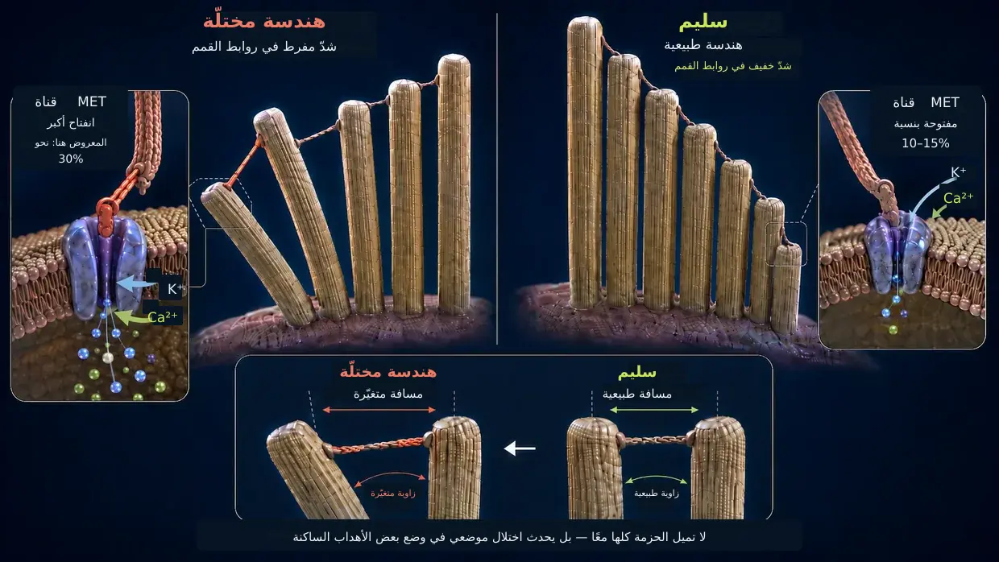
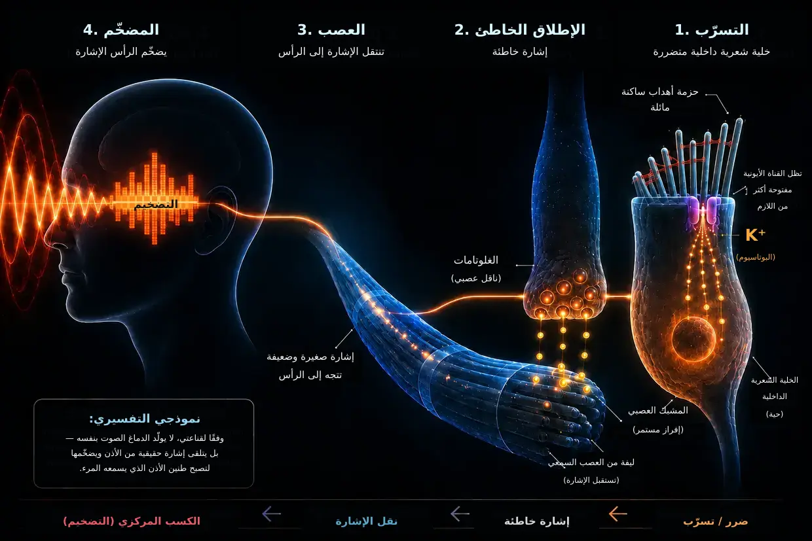

طنين الأذن الناجم عن الضوضاء – عندما تبلغ الأذن حدود قدرتها
آخر تحديث: أغسطس 2026
هذا هو تفسيري الخاص، القائم على سنوات من البحث وعلى إصابتي بطنين الأذن مرتين وتغلّبي عليه في كلتا المرتين – وليس معيارًا طبيًا.
كنت أنا أيضًا آنذاك ممن عانوا من هذا المرض الشديد للغاية – كما سبق أن رويت في سيرتي الذاتية.
بلغ بي اليأس حدّ أنني أقسمت لنفسي: إما أن يرحل طنين الأذن، وإما أن أرحل أنا. (لم أكن أعني ذلك بتلك الجدية بالطبع، لكنني كنت فعلًا تحت ضغط هائل.)
كان ما عشته آنذاك في الأساس نغمة صاخبة حادة عالية التردد في أذني اليسرى، يصاحبها هسيس بعيد جدًا في الخلفية. كان ذلك أسوأ ما استطعت أن أتصوره في ذلك الوقت على الإطلاق. وزاد الطين بلة أن الأذن اليمنى انضمّت بعد ذلك بوقت قصير أيضًا – كنتيجة مباشرة لتعليمات الأطباء التي تبيّن لي شخصيًا أنها خاطئة تمامًا.
كان جوهر تلك «التعليمات» هو حجب النغمة بأصوات أخرى – مثل تشغيل الموسيقى عبر سماعات الرأس بمستوى صوت أعلى، أو إبقاء صوت هسيس يعمل باستمرار. لكن ما كان يعنيه ذلك في الواقع هو تعريض أذنيّ لمزيد من المثيرات الصوتية، مع أنهما كانتا قد أُرهقتا بشدة هائلة. وبالنظر إلى الأمر لاحقًا، كان ذلك أحد أكبر الأخطاء، لأن حالتي ساءت بسببه تحديدًا، وانجرّت الأذن الثانية إلى المشكلة أيضًا.
كان الصوت أشبه بهجوم دائم على أعصابي ونومي وحياتي بأكملها. قال لي الأطباء إن عليّ أن أتعلم التعايش معه. ووجدت على الإنترنت علاجات يناقض بعضها بعضًا. بدا لي كل ذلك حيرةً.
لذلك أقسمت لنفسي: لا يمكن أن يكون هذا كل شيء. وبدأت أبحث كالمهووس، وأقرأ الدراسات، وأقارن تقارير التجارب، وأكوّن تصوري الخاص. وشيئًا فشيئًا، تكشّفت آلية واضحة – صورة بدت منطقية بالنسبة إليّ، وأكدتها لاحقًا تجاربي الشخصية أيضًا.
أستطيع اليوم أن أقول: طنين الأذن الناجم عن الضوضاء ليس لغزًا. إنه نتيجة تعرّض الأذن لحمل يفوق طاقتها – وعندما يفهم المرء ما يحدث فيها، يفهم أيضًا لماذا يوجد ذلك الصوت وما يستطيع أن يفعله بنفسه.
الملخص اقرأه في 60 ثانية – أهم ما ينبغي معرفته في لمحة واحدة
عند التعرض لمستوى صوت بالغ الارتفاع (مثل الملهى الليلي)، تعجز المضخات ببساطة عن مواكبة التدفق. ينفجر استهلاك الطاقة (ATP)، وتعجز الخلية عن توفير المزيد، فتتحول إلى وضع طوارئ غير سليم، يتكوّن فيه حمض اللاكتيك ويزداد الوسط حموضةً – دوامة هبوطية تشبه الفشل العضلي أثناء العدو السريع. وعندما تعجز المضخات عن المواكبة، يتراكم الكالسيوم داخل الأهداب الساكنة الدقيقة. ينشّط هذا الكالسيوم الزائد إنزيمات التفكيك (إنزيمات الكالبين)، التي تلتهم «المادة اللاصقة» (بروتينات الربط المتصالب، Crosslinker) الموجودة بين الخيوط البنيوية الداخلية للهدب. ومن دون هذه المادة اللاصقة، يفقد الهدب صلابته ويتشوه. ونتيجة لذلك، تبقى القناة الأيونية عند قمته مفتوحة أكثر مما ينبغي باستمرار – مثل نافذة تُركت مائلةً ومفتوحة. ومن خلال هذا التسرّب الدائم، يتدفق البوتاسيوم إلى الداخل باستمرار، فيُبقي الخلية بأكملها تحت جهد كهربائي دائم. ويفتح هذا الجهد قنوات أخرى في الخلية الشعرية الداخلية نفسها، يتقطر عبرها الكالسيوم إلى المشبك العصبي، فيطلق هناك إفرازًا متواصلًا للغلوتامات إلى العصب السمعي. يستقبل الدماغ هذه الإشارة الخاطئة الخافتة ولكن الثابتة، ويدرك أن المدخل الطبيعي غائب في هذا النطاق الترددي، فيرفع مستوى مضخمه التمهيدي الداخلي (الكسب المركزي، Central Gain) إلى درجة بالغة الارتفاع. ومن خلال هذا التضخيم فقط تتحول الإشارة الخاطئة الضئيلة إلى صوت يُدرَك بوعي – أي طنين الأذن.
الخبر الجيد: ما دامت الخلية حية، فهي تمتلك مخطط البناء والقدرة على الإصلاح. وهي تحتاج إلى الطاقة ومواد البناء والراحة من أجل ذلك.
ما الذي يحدث فعلًا داخل الأذن: عملية السمع الفسيولوجية الطبيعية
قبل أن نتعمق في الأمر، إليك توضيحًا قصيرًا للمصطلحات كي نفهم المقصود على نحو صحيح في النص كله: توجد في الأذن الداخلية ما تسمى الخلايا الشعرية – وهي الخلايا الحسية الفعلية المسؤولة عن السمع. وعلى سطح كل خلية شعرية منفردة تقف حزمة من زوائد دقيقة شبيهة بالأصابع – هي الأهداب الساكنة (الستيريوسيليا). ويبلغ عددها على كل خلية شعرية، بحسب موقعها في القوقعة، نحو 50–300، مرتبةً في صفوف من القصير إلى الطويل مثل أنابيب الأرغن. ويمتلك كل هدب ساكن منها هيكله الداعم الداخلي الخاص، المكوّن من بروتينات الأكتين. وفي الاستخدام اليومي وفي الأبحاث، كثيرًا ما تسمى هذه الأهداب الساكنة ببساطة «شعيرات» أو «شعيرات حسية» – وهكذا أستخدم المصطلح في هذه الصفحة أيضًا. والمهم هو: عندما أتحدث عن «الشعيرات»، فأنا أعني دائمًا الأهداب الساكنة الموجودة على الخلية الشعرية، لا الخلية الشعرية نفسها.
مهم لسلسلة الإشارة: عندما أصف إفراز الغلوتامات عند المشبك العصبي والإشارة المرسلة إلى العصب السمعي، فأنا أعني بذلك تحديدًا الخلية الشعرية الداخلية.
تجري عملية السمع عادةً كسلسلة تفاعلات بالغة الدقة:
النبضة: يصيب مثير صوتي الشعيرات الدقيقة (الأهداب الساكنة) للخلايا الشعرية، فيثنيها إلى الجانب.
الشد الميكانيكي (روابط القمم، Tip-Links): لأن قمم هذه الشعيرات متصلة بعضها ببعض بخيوط بروتينية بالغة الدقة (روابط القمم، Tip-Links)، ينشأ شد بفعل الانحناء. وتعمل هذه الخيوط كنظام سحب ميكانيكي بالحبل: فهي تسحب القناة الأيونية عند القمة وتفتحها فعليًا – مثل سدادة في حوض الاستحمام يسحبها المرء.
التدفق إلى الداخل: لأن الأذن الداخلية مملوءة بسائل غني بالبوتاسيوم، يتدفق البوتاسيوم (K⁺) فورًا عبر هذه القناة المفتوحة الآن إلى داخل الهدب الحسي – ومعه الكالسيوم أيضًا بكميات قليلة.
التنشيط: يغيّر تدفق البوتاسيوم إلى الداخل الجهد الكهربائي للخلية الشعرية الداخلية (إزالة الاستقطاب). وهذا يفتح تباعًا قنوات الكالسيوم الواقعة في موضع أدنى داخل الخلية الشعرية الداخلية نفسها – لا في الأهداب الحسية، بل في جسم الخلية الموجود تحتها.
الإشارة: ولا يحفّز إطلاق النواقل العصبية، التي تطلق الإشارة عبر العصب السمعي إلى الدماغ، إلا هذا الكالسيوم المتدفق إلى داخل الخلية الشعرية الداخلية.
إعادة الضبط: بعد ذلك، تضخ نواقل متخصصة – موجودة في الأهداب الحسية وكذلك في جسم الخلية الشعرية – البوتاسيوم والكالسيوم الزائدين إلى الخارج مجددًا بمساعدة ATP (طاقة الخلية)، بحيث تستطيع الخلية أن تهدأ.
صُمم هذا النظام بحيث تحدث باستمرار حركة صغيرة من «الدخول والخروج» – مثل إيقاع التنفس. والنقطة الحاسمة هنا هي أن القناة الموجودة عند قمة الهدب لا تكون مغلقة تمامًا في حالة الراحة، بل تظل دائمًا مفتوحة بمقدار ضئيل – وهذا طبيعي ومقصود، كي تستطيع الخلية في أي وقت أن تستجيب فورًا حتى لأخفت صوت. وما دام الهدب مستقيمًا، تبقى هذه الفتحة ضئيلة ومضبوطة. أما إذا ظل الهدب مائلًا إلى الجانب باستمرار، فتبقى القناة مفتوحة أكثر مما ينبغي بكثير – وهنا تحديدًا تبدأ المشكلة.
قبل أن ننظر الآن إلى ما يحدث عندما يتعرض هذا النظام لحمل يفوق طاقته، هناك فكرة مهمة: عندما ينشأ طنين أذن مزمن بعد رضح ناجم عن الضوضاء، يعتقد كثير من المصابين – وينقل كثير من الأطباء هذا الانطباع أيضًا – أن الخلايا الشعرية في الأذن قد دُمّرت بلا رجعة، وأن الدماغ بات ينتج الصوت من الذاكرة بمفرده. بحسب قناعتي، هذا التفسير قاصر. ولأن الصوت موجود فعلًا تحديدًا، فلا بد، بحسب قناعتي، من أن تنشأ إشارة خاطئة نشطة في موضع ما من النسيج المحيطي الذي لا يزال قابلًا للاستثارة. وفي سلسلتي الرئيسية تأتي هذه الإشارة من خلية شعرية داخلية لا تزال حية ولكن تنظيمها مختل. وفي حالات محيطية أخرى، قد يكون المصدر أيضًا عصبًا سمعيًا حيًا يطلق إشارات خاطئة بسبب مشكلات في الميالين أو بسبب التهاب. أما النسيج الميت بالكامل فلا يرسل أي إشارة.
ما يلي الآن هو شرح مفصل، خطوةً بخطوة، لهذا الفقدان الوظيفي. ولمن يفضّل صيغة أكثر اختصارًا، يوجد ملخص في موضع أعلى من هذه الصفحة.
عندما تصبح الضوضاء أقوى مما ينبغي (ما يحدث عند زيارة ملهى ليلي)
لكن إذا وصل قدر مفرط من الصوت دفعةً واحدة أو بصورة مستمرة (مزمنة)، يختل التوازن وتفشل الآلية الميكانيكية. لا تؤدي كل زيارة إلى ملهى ليلي إلى ذلك – ولكن عندما ينشأ طنين الأذن الناجم عن الضوضاء، فهذه، بحسب قناعتي، هي تحديدًا الآلية الكامنة وراءه: سلسلة متتابعة من فقدان الطاقة والانهيار الميكانيكي والفيضان الكيميائي – ثلاث عمليات تؤجج بعضها بعضًا وتفضي إلى حلقة مفرغة.
- 01انهيار الطاقة
- 02الانهيار الميكانيكي
- 03الإنقاذ الطارئ وعجلة الهامستر
المرحلة 1: انهيار الطاقة
لنتذكر عملية السمع الطبيعية: مع كل مثير صوتي، تتدفق الأيونات إلى داخل الخلية، ثم يجب ضخها إلى الخارج مجددًا مع استهلاك ATP. وعند مستوى صوت طبيعي، يكون هذا إيقاعًا مريحًا – تضخ الخلية بهدوء وتملك وفرة من الطاقة. أما عند 100 ديسيبل في الملهى الليلي، فتنهال الموجات الصوتية على الشعيرات بلا انقطاع وبقوة وحشية. تنفتح القنوات بعنف، وتتدفق الأيونات إلى الداخل بكميات هائلة، وتعجز المضخات ببساطة عن مواكبتها. ينفجر استهلاك الطاقة.
تحرق الخلايا الشعرية الآن طاقةً أكثر بكثير مما تستطيع توفيره. وتعمل محطات الطاقة الطبيعية في الخلية (الميتوكوندريا) عند أقصى حدودها. ولكي تتمكن الخلية أصلًا من سد هذا الجوع الهائل إلى الطاقة، تلجأ إلى مسار طوارئ أسرع لكنه غير سليم: التحلل السكري اللاهوائي. يوفّر وضع الطوارئ هذا طاقةً فورية بالفعل، لكنه ينتج حمض اللاكتيك (اللاكتات) بوصفه ناتجًا ثانويًا، ما يدفع الوسط الخلوي نحو الحموضة. وتصبح الإنزيمات المسؤولة عن إنتاج الطاقة أقل كفاءةً باستمرار بفعل الحمض – دوامة هبوطية.
المقارنة بالرياضة: يعرف الجميع هذا من تمارين الأثقال أو العدو السريع. فبعد فترة معينة تبدأ العضلة في «الاحتراق» (ارتفاع اللاكتات)، ثم تتوقف في مرحلة ما عن العمل ببساطة – إنه الفشل العضلي التقليدي. وهذا الفشل الكيميائي نفسه يحدث أيضًا في الأذن الداخلية، إلا أن المرء لا يشعر به على هيئة ألم، بل على هيئة فقدان للوظيفة.
وهنا تحديدًا يكمن الخطر الحقيقي: عندما تعجز المضخات عن المواكبة، يتراكم الكالسيوم داخل الأهداب الحسية. يكون هذا الكالسيوم طبيعيًا وضروريًا بكميات قليلة – لكنه يتحول إلى مُدمِّر عندما يوجد بكميات زائدة. وتوضح المرحلة 2 ما يدمّره هذا الكالسيوم ولماذا يُعد ذلك كارثيًا إلى هذا الحد.
المرحلة 2: الانهيار الميكانيكي
لفهم ما يفعله الكالسيوم الآن، لا بد من معرفة سريعة بكيفية بناء الهدب الحسي من الداخل: فهو يتكون من مئات خيوط الأكتين المتوازية – ويمكن تصوره كحزمة من أعواد السباغيتي غير المطهية. وتلصق هذه الخيوط بعضها ببعض جسور بروتينية قصيرة تسمى بروتينات الربط المتصالب (Crosslinker). وتؤدي بروتينات الربط المتصالب هذه دور المهندس الإنشائي الفعلي للهدب – فهي تمسك الحزمة معًا بإحكام إلى درجة أنها تقف صلبةً كأنبوب فولاذي، من تلقاء نفسها تمامًا ومن دون استهلاك طاقة من أجل ذلك. وما دامت بروتينات الربط المتصالب سليمة، يبقى الهدب منتصبًا.
وبفعل فقدان الطاقة في المرحلة 1، تبدأ الآن سلسلة تفاعلات كارثية:
تُجتاح المضخات (فيضان الكالسيوم): كما رأينا في عملية السمع الطبيعية، تتدفق دائمًا كمية قليلة من الكالسيوم إلى الهدب الحسي مع البوتاسيوم. ولا يمثل ذلك مشكلة في الوضع الطبيعي – فهناك مضخات خاصة بالكالسيوم موجودة مباشرةً في غشاء الهدب الحسي، وتُخرج هذا الكالسيوم فورًا. لكن هذه المضخات تحتاج أيضًا إلى ATP. وعند فرط الحمل الحاد في الملهى الليلي، لا تكفي الطاقة بفارق شاسع – فتعجز المضخات تمامًا عن المواكبة. والنتيجة: حتى كميات الكالسيوم القليلة التي لا تمثل مشكلةً في العادة تتراكم الآن داخل الهدب – وهذا التركيز المفرط تحديدًا هو ما يطلق الانهيار البنيوي الفعلي.
والآن يأتي الانهيار البنيوي الفعلي: ينشّط الكالسيوم المتراكم إنزيمات تفكيك خاصة (ما يسمى بإنزيمات الكالبين). وتلتهم هذه الإنزيمات بروتينات الربط المتصالب نفسها التي تعرفنا إليها للتو – أي الملاط الذي يمسك الحزمة معًا.
ولفهم سبب كون ذلك مدمرًا إلى هذا الحد، تساعدنا صورة بسيطة:
خذ عودًا واحدًا من السباغيتي غير المطهية في يدك – يمكنك ثنيه وكسره بسهولة. والآن خذ مئة عود من السباغيتي وألصقها بغراء فوري في قضيب متماسك – وفجأة يصبح لديك أنبوب صلب يكاد لا ينثني. تكون الخيوط منفردةً ضعيفة، لكنها تكون قويةً عندما تُلصق معًا.
هكذا يعمل الهدب الحسي تمامًا: ليست خيوط الأكتين وحدها ما يمنحه الصلابة، بل ترابط الخيوط معًا بمساعدة بروتينات الربط المتصالب.
عندما تلتهم إنزيمات الكالبين هذه المادة اللاصقة، يحدث العكس: يعود الأنبوب الصلب إلى خيوط منفردة رخوة. لا تزال خيوط الأكتين موجودة داخل الهدب الساكن – فهي لم تختف، لكنها لا تعود متماسكة من دون الروابط التي تصل بينها. يفقد الهدب صلابته، لا لأن شيئًا قد انكسر، بل لغياب التماسك الداخلي.
وإذا ظل الشخص في الملهى الليلي، فكثيرًا ما يزداد الأمر سوءًا: إذ يمكن للخيوط المنفردة المكشوفة الآن، التي فقدت الحماية والدعم، أن تنكسر فعلًا عند نقاط الضعف تحت ضغط الصوت المستمر – مثل أعواد سباغيتي منفردة تنثني تحت الحمل من دون دعم الأعواد المجاورة. وإذا انكسر أحد الخيوط، يزداد الحمل على الخيوط المجاورة، التي قد تنكسر بدورها – ويصبح هناك خطر حدوث تأثير متسلسل.
النتيجة: من دون دعامته الداخلية، يعجز الهدب عن الحفاظ على وضعه المنتصب – فيتشوه. ولتصور ما يعنيه ذلك، تساعدنا الصورة التالية: تقف الأهداب الحسية في صفوف متجاورة، وهي متفاوتة الطول، وتتصل عند قممها بخيوط دقيقة (روابط القمم، Tip-Links). وفي الحالة السليمة، تقف الأهداب كلها مستقيمةً تمامًا – ويكون الشد في الخيوط الواقعة بينها مضبوطًا تمامًا، ولا تكون القناة في حالة الراحة إلا مفتوحةً بمقدار ضئيل. وعندما تصل موجة صوتية، تميل الأهداب إلى الجانب لفترة قصيرة، فتتوتر الخيوط وتُفتح القناة – وما إن تمر الموجة حتى تعود الأهداب إلى وضعها ويزول التوتر عن كل شيء. فتح وإغلاق منتظمان.
والآن تخيّل أن الأهداب نفسها لم تعد مستقيمة، بل باتت متدليةً بزاوية – حتى من دون أن تصل أي موجة. يصبح شد الخيوط الواقعة بينها مختلفًا بصورة دائمة عما هو مفترض. وفي الوقت نفسه، يكون الغشاء مشوهًا أيضًا. ونتيجة لذلك، تكون القناة مفتوحةً أكثر مما ينبغي حتى في حالة الراحة. ومن هذه اللحظة، يتدفق البوتاسيوم والكالسيوم إلى داخل الخلية باستمرار ومن دون ضبط، مع أن الموسيقى توقفت منذ وقت طويل. لقد نشأ التسرّب الدائم – ومعه الأساس الذي يقوم عليه طنين الأذن. تطلق الخلية الشعرية الداخلية إشارةً مع أنه لا يوجد صوت – لأن الهندسة لم تعد سليمة.

قد يصبح طنين الأذن الناجم عن الضوضاء ملحوظًا مباشرةً بعد حادثة التعرّض للضوضاء، لكنه قد لا يُدرَك بوعي إلا بعد ساعات أو أيام. أما عندي، فلم ألحظ الصوت إلا في اليوم 3؛ ولا أعرف حتى اليوم على وجه اليقين لماذا. وسأعرض التفسيرات المحتملة في قسم الأسئلة الشائعة صراحةً بوصفها فرضيات.
المرحلة 3: الإنقاذ الطارئ – ولماذا لا يكفي
ترصد الخلية الضرر وتطلق فورًا آليةً للبقاء: تندفع بروتينات إصلاح خاصة (مثل XIRP2)، تكون موجودةً سلفًا في جسم الخلية كمخزون للطوارئ، نحو مواضع الضرر. وإذا كانت الخيوط قد انكسرت، تلتف هذه البروتينات حول مواضع الكسر (أعواد السباغيتي من المرحلة 2) مثل شريط لاصق مُدرَّع على المستوى الجزيئي، وتمنع الخيوط من الانقطاع كليًا، وتمنع السلسلة المتتابعة من الخروج عن السيطرة. هذا هو الطور 1: التثبيت الإسعافي الحاد. تجري هذه العملية بسرعة (من دقائق إلى ساعات)، لأن بروتين XIRP2 لا يحتاج إلى أن يُصنّع أولًا – بل يُستدعى فقط إلى موضع الضرر. ينجو الهدب الحسي – لكن الهيكل يظل لينًا وغير مستقر، لأن بروتين XIRP2 لا يستطيع تعويض بروتينات الربط المتصالب المفقودة بين الخيوط.
وكان ينبغي الآن أن يبدأ حتمًا الطور 2 (إعادة التشكيل النشطة) – وهو يشمل ورشتي إصلاح في آن واحد: أولًا، ينبغي استبدال رُقَع XIRP2 بأكتين جديد وسليم. وثانيًا، ينبغي تصنيع بروتينات ربط متصالب جديدة وإدخالها بين الخيوط لإعادة لصق الحزمة وتحويلها إلى قضيب متماسك من جديد. تستهلك كلتا العمليتين كميات هائلة من ATP، وتحتاج كلتاهما إلى مواد من جسم الخلية، ولا تمتلك الأهداب الساكنة محطات طاقة خاصة بها (الميتوكوندريا) – فهي تعتمد اعتمادًا كاملًا على إمداد الطاقة من الأسفل، من جسم الخلية الشعرية. لكن هنا تحديدًا يُطبِق الفخ المزمن على معظم البالغين. أما السبب، فيشرحه الفصل التالي.
-
01انهيار الطاقة
ينفجر استهلاك ATP، وتتحول الخلية إلى وضع الطوارئ. يتراكم حمض اللاكتيك، ويزداد الوسط حموضةً.
-
02الانهيار الميكانيكي
يلتهم الكالسيوم الزائد «المادة اللاصقة» بين خيوط الأهداب الساكنة. يتشوه الهدب – وينشأ التسرّب.
-
03الإنقاذ الطارئ وعجلة الهامستر
يثبّت XIRP2 مواضع الكسر. تنجو الخلية في الحالة الحادة – لكن الطاقة اللازمة للإصلاح الفعلي غير متوافرة.
فخ عجلة الهامستر: لماذا يتعطل الإصلاح بصورة دائمة
والآن تأتي النقلة الحاسمة من الحدث الحاد إلى المشكلة المزمنة.
بمجرد توقف الضوضاء، يبدأ التعافي: تشرع الخلية فورًا في إنتاج ATP من جديد، وتعود المضخات خطوةً خطوة إلى التشغيل الطبيعي. ثم تجري عملية التجدد بكامل نطاقها – تفكيك الأحماض، وإجراءات الإصلاح، وإعادة ملء احتياطيات الطاقة – قبل كل شيء مع مرور الوقت، ولا سيما أثناء النوم. وهكذا يبدأ الجسم التنظيف: ففيض الأيونات المتراكم بصورة حادة – الذي نشأ من عبء الملهى الليلي الهائل ومن التسرّب الذي تكوّن في هذه الأثناء معًا – يُنقل تدريجيًا إلى الخارج. وتعود الذروة القصوى للأيونات إلى طبيعتها في معظمها، ومعها ينخفض أيضًا مستوى الكالسيوم إلى ما دون العتبة الحرجة: فتصبح إنزيمات التفكيك (إنزيمات الكالبين) غير نشطة، ويتوقف الضرر البنيوي النشط.
لكن لماذا لا تشفى الأذن رغم ذلك؟
لأن التسرّب الدائم يظل قائمًا. تظل الأهداب الساكنة مائلة، وتبقى القناة الأيونية مفتوحة باستمرار أكثر مما ينبغي، ويتعين على المضخات نقل هذا الفائض إلى الخارج على مدار الساعة. ولفهم السبب الدقيق الذي يجعل هذا الأمر يمنع الإصلاح، تساعدنا الصورة التالية:
مبدأ السقف–المنزل–القبو
لفهم هذه المعضلة في لمحة واحدة، من المفيد النظر إلى الخلية الشعرية بوصفها مبنى يغذّيه عداد كهرباء واحد (ATP):
السقف: الأهداب الحسية الدقيقة (الأهداب الساكنة) ذات هيكل الأكتين الضعيف، والعالقة في وضع طوارئ الطور 1. هنا في الأعلى يوجد التسرّب، وهنا كان ينبغي لآلة البناء أن تعمل فعلًا. لكن بدلًا من ذلك، تنشغل مضخات السقف نفسها بإخراج البوتاسيوم المتدفق إلى الداخل، ولا سيما الكالسيوم الخطير، باستمرار – لأنه إذا ارتفع الكالسيوم هنا في الأعلى مجددًا فوق العتبة الحرجة، فقد تصبح إنزيمات التفكيك نشطة من جديد وتفاقم الضرر.
المنزل: جسم الخلية الكبير الفعلي – والمكان الوحيد الذي توجد فيه محطات الطاقة (الميتوكوندريا) التي تنتج ATP لجميع أجزاء الخلية. والآن تتدفق باستمرار أيونات زائدة عبر السقف المعطّل.
القبو: توجد هنا في الأسفل أيضًا مضخات أيونية، يتعين عليها أن تجرف بيأس الكالسيوم المتسرّب إلى الخارج عكس التدفق، كيلا يُغمر المنزل بالكامل وتموت الخلية.
ولأن المضخات في السقف والمضخات في القبو تستهلك معظم الطاقة المتاحة لمجرد حماية المبنى من الغرق، فلا تبقى لدى الخلية أي موارد لإرسال عمّال البناء وإصلاح الضرر في هيكل الأكتين. يُؤجَّل الإصلاح بصورة دائمة. يبقى التسرّب مفتوحًا. تكدح المضخات. تدور عجلة الهامستر.
من صراع البقاء إلى الصوت: هكذا ينشأ طنين الأذن

نعرف الآن أن التسرّب الدائم قائم وأن الخلية عالقة في عجلة الهامستر. لكن كيف يتحول ذلك إلى صوت مسموع؟ يُبقي البوتاسيوم المتدفق باستمرار الخلية الشعرية الداخلية بأكملها تحت جهد كهربائي دائم (في حالة إزالة الاستقطاب) – فلا تعود أبدًا إلى جهد الراحة. ويفتح هذا الجهد الدائم بدوره قنوات الكالسيوم المحكومة بالجهد في موضع أدنى داخل الخلية الشعرية الداخلية، فيتقطر عبرها باستمرار شيء من الكالسيوم إلى المشبك العصبي. ويطلق هذا الكالسيوم إفرازًا خفيفًا ومتواصلًا للناقل العصبي الغلوتامات إلى العصب السمعي. يتلقى الدماغ إشارة «إطلاق!» دائمة – مع أنه لا يوجد صوت – ويترجم دائرة القصر الكيميائية هذه إلى صوت.
ما الذي يفعله الدماغ بذلك: المضخّم، لا السبب
هنا يدخل الدماغ إلى المسرح. غالبًا ما يزعم الطب السائد أن الدماغ قد «تعلّم» طنين الأذن، وأنه بات ينتج الصوت الآن بصورة مستقلة تمامًا. وهذا، بحسب قناعتي، تفسير غير مكتمل. فالدماغ لا يخلق طنين الأذن من العدم. بل يستجيب، بوصفه معالجًا بالغ التعقيد، لتيار تسرّب الغلوتامات المستمر والخاطئ القادم من الأذن.
ولأن الضرر الناجم عن الضوضاء والأهداب المائلة يؤديان إلى غياب الإشارات الخارجية الحقيقية والنظيفة (الترددات الطبيعية)، يدخل مركز المعالجة السمعية في الدماغ في نوع من الحرمان الحسي. وبوصف ذلك آلية حماية تطورية، يستجيب الدماغ بلا هوادة: يرفع المضخّم التمهيدي الخاص بهذه الترددات المفقودة تحديدًا إلى درجة بالغة الارتفاع – ما يسمى بالكسب المركزي (Central Gain). وفي البرية، كان ذلك حاسمًا للبقاء كي يسمع المرء، رغم تضرر الأذن، وقع أقدام حيوان مفترس يتسلل نحوه. وهكذا يأخذ الدماغ تيار التسرّب الخافت أصلًا من الخلايا الشعرية الداخلية المتضررة ويدفعه بقوة عبر مُعادِل صوتي هائل. ويضخّم الإشارة لتصبح صافرة إنذار تصمّ الآذان، ندركها بوعي بوصفها طنين الأذن.
فخ الحجب الصوتي الكارثي: لماذا تُعد تطبيقات أصوات الهسيس أسوأ ما يمكن للمرء فعله
يحرق الحجب الصوتي نافذة الإصلاح الوحيدة التي ما زالت أذنك تملكها.
هنا يقع، بحسب تجربتي، أفدح خطأ يرتكبه المصابون – بناءً على نصيحة طبيب. تقول التوصية التقليدية: «احجب الصوت بالضوضاء البيضاء أو بأصوات الطبيعة أو بالموسيقى الهادئة». يبدو ذلك منطقيًا بصورة بديهية، ويمنح بالفعل راحة قصيرة المدى. لكنه، بحسب فهمي، كارثي من الناحية الكيميائية الحيوية.
لا بد من إدراك أن الأهداب ما زالت حية ونشطة – لكنها مائلة. وتحاول الخلية في الواقع استغلال كل فترة راحة (ولا سيما أثناء النوم) لكي تصلح بنيتها وتستقيم من جديد بما تبقى لديها من طاقة.
لكن إذا واصل المرء تعريض أذنيه للصوت بصورة مصطنعة، فإنه يجبر الأهداب الساكنة المتضررة على العودة إلى وضع العمل. فيتعين عليها أن تستجيب للصوت من جديد، وأن تضخ الأيونات، وتستهلك بالضبط الطاقة التي كانت قد ادخرتها للطور 2 – أي للإصلاح الفعلي. وهناك مشكلة ثانية أيضًا: تجعل كل موجة صوتية خيوط الأكتين في الحزمة المتضررة تنزلق بعضها بمحاذاة بعض. فتُهز بروتينات الربط المتصالب التي أُدخلت حديثًا وتُطرَد من مواضعها قبل أن تتمكن من الارتباط على نحو صحيح – مثل درجة يحاول المرء تثبيتها في سلّم بينما يهز شخص آخر السلّم.
وفي صورة السقف–المنزل–القبو: يجلد التعريض الصوتي المصطنع السقف اللين أصلًا ميكانيكيًا. ويبقى التسرّب مفتوحًا أكثر مما ينبغي. ويتعين على المضخات في القبو أن تعمل عند أقصى حدودها المطلقة على مدار 24 ساعة في اليوم. ولا تبقى أي طاقة لعمّال البناء في الأعلى على السقف.
وهذا يفسر ظاهرةً عشتها بنفسي ويرويها عدد لا يحصى من المصابين: يحجب المرء طنين الأذن ليلًا بصوت هسيس، فيشعر بتحسن قصير المدى، لكن طنين الأذن يكون في صباح اليوم التالي أشد عدوانية وأعلى مما كان عليه في المساء السابق. والسبب هو أن الخلية أحرقت ورديتها الليلية – نافذة الإصلاح الوحيدة – في معالجة الصوت المصطنع.
وكلمة صريحة في هذا الشأن: أتفهم تمامًا لماذا يستطيع بعض الناس التعايش جيدًا مع الحجب الصوتي. فإذا كان طنين الأذن يدفع المرء نفسيًا إلى الهاوية ويجعل النوم مستحيلًا، فقد يكون حجبه على المدى القصير منقذًا للحياة بالمعنى الحرفي للكلمة – ولا أريد أن أثني أي شخص يمر بذلك عنه. لكن الحجب الصوتي، بحسب فهمي، يأتي بنتائج عكسية بالنسبة إلى التجدد الفعلي – أي إلى أن يختفي طنين الأذن فعلًا من جديد. وهذا هو الفرق الذي أريد أن ألفت الانتباه إليه.
الأمل: لماذا يمكن حدوث الإصلاح
رغم كل هذه الآليات، توجد بارقة أمل حاسمة: بما أن نواة الخلية سليمة وأن هيكل الأكتين لا يزال موجودًا من حيث المبدأ، تستطيع الخلية إصلاح البنية. ويشهد الأكتين في الأهداب الساكنة تجدّدًا مستمرًا ونشطًا – إذ تُفكَّك خيوط الأكتين باستمرار ويُعاد بناؤها. وهكذا تجدد الخلية بنيتها بنفسها على نحو دائم. ويعني الطور 2 بصورة ملموسة أن رُقَع XIRP2 الموجودة عند مواضع انكسار الخيوط تُستبدل بأكتين جديد، وأن بروتينات ربط متصالب جديدة توضع بين الخيوط إلى أن تصبح الحزمة متماسكة وصلبة من جديد. ولا يتعلق السؤال بـما إذا كانت الخلية قادرة على الإصلاح، بل بما إذا كانت تملك، في ظل الظروف القائمة، ما يكفي من الطاقة ومواد البناء لذلك – وبما إذا كان المرء يمنحها الراحة التي تحتاج إليها من أجل ذلك.
حتى إذا كان الهيكل الداعم الداخلي قد انهار بشدة، فهذا ليس حكمًا نهائيًا. فما دامت الخلية حية، فهي تملك مخطط البناء والقدرة على إعادة بناء هذا الهيكل – بمجرد أن تتوافر من جديد طاقة كافية (ATP) ومواد بناء، ويتوقف الإجهاد الكيميائي.
ومن المثير للاهتمام أن أبحاث الأدوية تلاحق هذا المبدأ نفسه تحديدًا – أي زيادة الطاقة الخلوية (ATP) – وهو ما يدعم نموذجي التفسيري (مع أن تأثير ATP/ROS لم يُظهَر حتى الآن إلا في مزارع الخلايا). ويستهدف دواء AC102 هذه الآلية نفسها تحديدًا: ففي نموذج حيواني (الجربيل الصحراوي)، تراجع نمط سلوكي نموذجي لطنين الأذن بعد جرعة واحدة من AC102 على مدى 5 أسابيع تراجعًا شبه كامل (لم يبق في النهاية سوى 1 من أصل 15 حيوانًا متأثرًا، في مقابل جزء كبير من مجموعة الدواء الوهمي)، وقد قيس ذلك بواسطة منعكس الفزع (GPIAS) – وهو مؤشر سلوكي معترف به لطنين الأذن. ولدى البشر، تُجرى حاليًا دراسة سريرية من المرحلة الثانية، ومن المتوقع صدور نتائجها في 2026 (حالة الدراسات المتعلقة بـAC102 في صفحة مصادري). كما يستهدف العلاج بالليزر منخفض المستوى (التعديل الحيوي الضوئي) هذا النهج الأساسي القائم على الطاقة.
الخلاصة
ما يمثله طنين الأذن المزمن الناجم عن الضوضاء من الناحية الفسيولوجية في نموذجي الرئيسي هو إشارة خاطئة نشطة صادرة من نسيج محيطي لا يزال قابلًا للاستثارة. وبالنسبة إلى نوبتيّ أنا، أرجّح أن المصدر الرئيسي كان خلايا شعرية داخلية حية عالقة في وضع طوارئ طاقي؛ وأرى أن مشاركة العصب السمعي أو الميالين ممكنة، لكنني لا أستطيع إثباتها في حالتي على وجه اليقين. ولا يخلق الدماغ الصوت من انعدام كامل للإشارة، بل يضخّم الإشارة الخاطئة الموجودة.
يعتمد بقاء الصوت فقط على ما إذا كان المرء يساعد الخلايا على إغلاق التسرّب وإمداد المضخات بالطاقة من جديد، لكي يتمكن الهدب من الاستقامة مرة أخرى.
فما الذي ينبغي فعله الآن عند الإصابة بطنين الأذن الناجم عن الضوضاء؟
مع أن الآليات معقدة، فهناك ثلاثة مفاتيح ضبط أساسية ينبغي للمرء أن يفهمها فورًا. وأشرح بالتفصيل في صفحة نهج الحل كيف تبدو مفاتيح الضبط هذه على أرض الواقع، وكيف ساعدتني آنذاك مرتين على التخلّص من طنين الأذن حتى اختفى تمامًا.
أشرح في الصفحة التالية كيف تبدو مفاتيح الضبط الثلاثة هذه على أرض الواقع وكيف ساعدتني آنذاك.
القصة كاملة في سلسلة واحدة
يمكن تلخيص ما يحدث عند رضح ناجم عن الضوضاء، وفقًا لنموذجي التفسيري، في سلسلة متصلة:
عند التعرض لمستوى صوت بالغ الارتفاع (مثل الملهى الليلي)، تعجز المضخات ببساطة عن مواكبة التدفق. ينفجر استهلاك الطاقة (ATP)، وتعجز الخلية عن توفير المزيد، فتتحول إلى وضع طوارئ غير سليم، يتكوّن فيه حمض اللاكتيك ويزداد الوسط حموضةً – دوامة هبوطية تشبه الفشل العضلي أثناء العدو السريع. وعندما تعجز المضخات عن المواكبة، يتراكم الكالسيوم داخل الأهداب الساكنة الدقيقة. ينشّط هذا الكالسيوم الزائد إنزيمات التفكيك (إنزيمات الكالبين)، التي تلتهم «المادة اللاصقة» (بروتينات الربط المتصالب، Crosslinker) الموجودة بين الخيوط البنيوية الداخلية للهدب. ومن دون هذه المادة اللاصقة، يفقد الهدب صلابته ويتشوه. ونتيجة لذلك، تبقى القناة الأيونية عند قمته مفتوحة أكثر مما ينبغي باستمرار – مثل نافذة تُركت مائلةً ومفتوحة. ومن خلال هذا التسرّب الدائم، يتدفق البوتاسيوم إلى الداخل باستمرار، فيُبقي الخلية بأكملها تحت جهد كهربائي دائم. ويفتح هذا الجهد قنوات أخرى في الخلية الشعرية الداخلية نفسها، يتقطر عبرها الكالسيوم إلى المشبك العصبي، فيطلق هناك إفرازًا متواصلًا للغلوتامات إلى العصب السمعي. يستقبل الدماغ هذه الإشارة الخاطئة الخافتة ولكن الثابتة، ويدرك أن المدخل الطبيعي غائب في هذا النطاق الترددي، فيرفع مستوى مضخمه التمهيدي الداخلي (الكسب المركزي، Central Gain) إلى درجة بالغة الارتفاع. ومن خلال هذا التضخيم فقط تتحول الإشارة الخاطئة الضئيلة إلى صوت يُدرَك بوعي – أي طنين الأذن.
المأساوي في الأمر هو أن الطاقة تتجدد جزئيًا بعد الملهى الليلي، لكن المضخات تستهلك معظمها لمجرد إدارة التسرّب الدائم وإبقاء الخلية حية. ولا يبقى شيء للإصلاح الفعلي – أي تصنيع بروتينات ربط متصالب جديدة وإعادة الهيكل إلى وضعه المنتصب. تظل الخلية عالقة في عجلة الهامستر. ويتوقف ما إذا كان طنين الأذن سيبقى مؤقتًا أو يصبح مزمنًا على مقدار «المادة اللاصقة» التي دُمِّرت (القليل = قابل للإصلاح، الكثير = عجلة الهامستر)، وعلى ما إذا كان المرء يمنح الأذن الراحة أو يواصل تعريضها للصوت (فالحجب بصوت الهسيس يفاقم الوضع بحسب تجربتي)، وعلى ما إذا كان الجسم يحصل على ما يكفي من الطاقة ومواد البناء. والخبر الجيد هو: ما دامت الخلية حية، فهي تمتلك مخطط البناء والقدرة على الإصلاح – وهي تحتاج إلى الطاقة ومواد البناء والراحة من أجل ذلك.
أسئلة إضافية والأسئلة الشائعة
إلى كل من يرغب في التعمق أكثر: سأعالج في قسم الأسئلة الشائعة موضوعات أخرى تتعلق بطنين الأذن الناجم عن الضوضاء – مثل سبب إمكان تذبذب شدته، وسبب انخفاضه مؤقتًا عند حجبه، وسبب ارتفاعه من جديد بعد ذلك بوقت قصير. وأنا أبني صفحة الأسئلة الشائعة حاليًا خطوةً خطوة.
تنبيه مهم
في حال الإصابة بطنين الأذن أو مشكلات السمع، ولا سيما إذا ظهرت بصورة حادة، راجع من فضلك طبيب أنف وأذن وحنجرة لكي تُفحص الأسباب العضوية. إن المحتويات والنماذج التفسيرية والنُهج التي أشاركها على هذا الموقع ليست استشارة طبية، بل هي تقرير تجربتي الشخصية وبحثي الخاص. لكل جسم خصائصه الفردية. أنا لست طبيبًا ولا أقدّم وعودًا بالشفاء. ويتم تطبيق النُهج الموصوفة هنا على مسؤوليتك الخاصة.